Entrega 3 · Site SvelteKit · Prova revisada com o nome Iteruno · 02/11/2026
As seis páginas e a 404 do site da Iteruno (ex-Informat), geradas pelo SvelteKit só com o sistema de design (v1.2) e capturadas inteiras nos dois temas, a 1200 e a 360 px, servidas pela imagem de contêiner que vai para o cluster. O que ainda não foi confirmado aparece nas telas como [[CONFIRMAR …]].
Cada bloco abaixo mostra a página inteira nos dois temas, lado a lado. As molduras rolam; a chave troca entre a captura de 1200 px (computador) e a de 360 px (celular). O link "abrir inteira" mostra a imagem sozinha, no tamanho real.
A Entrega 3 foi aprovada em 02/11 com o nome Informat. No mesmo dia o nome passou a Iteruno e as respostas A1 a D5 da ficha entraram no site (decisão D-24). As telas abaixo já são as novas.
Wordmark ITERUNO regerada com a mesma fonte e o mesmo símbolo; logotipos, ícones, og.png e o sistema de design (v1.2, classes itr-) refeitos. Informat só aparece como história, na página Sobre e no alternateName do JSON-LD.
WhatsApp da RBX, +55 11 91373-4954, e contact@rbxsystems.ch no rodapé, no Contato e no formulário, que saiu do modo "em configuração". Instagram fora até a conta nova existir.
Estúdio na Bela Vista (Bixiga), perto da Praça 14 Bis: você deixa e retira no portão, com hora marcada, ou a Iteruno busca e entrega na sua casa nas redondezas (Consolação, Brigadeiro, Paulista, Anhangabaú). Segunda a sábado. O número da rua não aparece: vai na hora de marcar.
Os três planos ficam "Sob consulta", com a nota "valores combinados caso a caso". Diagnóstico cobrado e abatido do serviço; site com a primeira versão em tempo real; garantia pelo serviço; busca e entrega vendáveis; nota fiscal: sim.
Rodapé: "Leandro Damasio · empresário individual · CNPJ a confirmar" (a razão social traz o CPF e não entra). Política: encarregado ceo@rbxsystems.ch, hospedagem na infraestrutura da RBX em mais de uma nuvem e região, log por 6 meses, mensagens guardadas sem prazo fixo, inclusive para treinar IA, com direito de exclusão e aviso na caixa do formulário.
Cluster k3s da RBX, pelo rbx-infra: Dockerfile, imagem no GHCR por GitHub Actions e manifestos em site/deploy/rbx-infra/. Esta prova rodou nessa imagem. Domínio iteruno.com aplicado em 02/11 (D-26); falta o repositório do site.
Promessa, as três frentes (Suporte, Sites, Cursos), os três planos "sob consulta" com a nota de preços, as próximas turmas (datas a confirmar), depoimentos (dois lugares reservados; a seção some se a lista ficar vazia), perguntas frequentes com as respostas sobre atendimento em casa, diagnóstico e nota fiscal, faixa de contato e rodapé. JSON-LD de LocalBusiness com nome, nome anterior, telefone, e-mail e bairro; endereço do site, imagem e redes só entram quando houver domínio e Instagram.
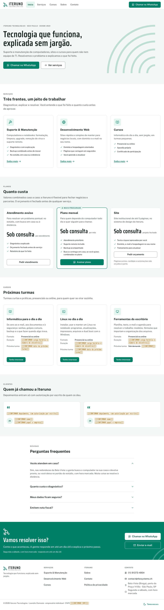
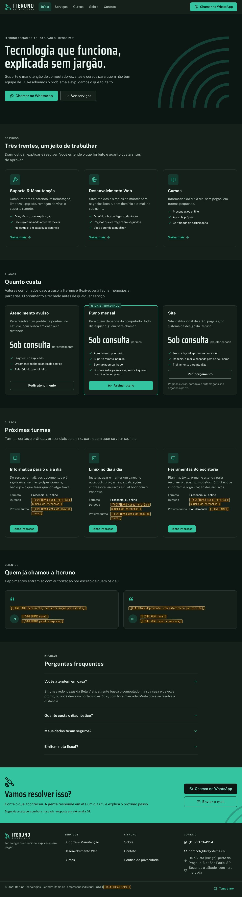
Uma seção por serviço, com âncora (#suporte, #sites): para quem é, o que entra, o plano, "Como funciona" em cinco passos e as perguntas daquele serviço. O texto já diz o modelo de atendimento (portão do estúdio, busca em casa, à distância), o diagnóstico cobrado e abatido, a primeira versão do site em tempo real e a garantia pelo serviço. Fecha com a chamada para os cursos e a faixa de contato.
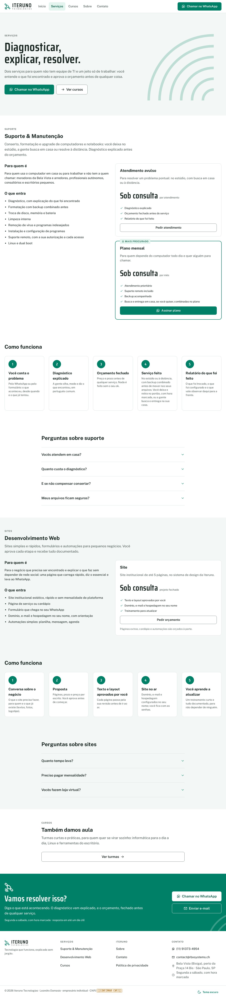
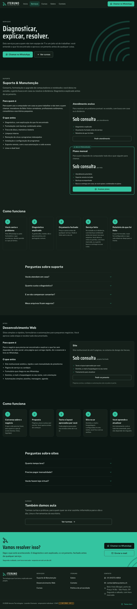
Três turmas alinhadas ao que a marca já prometia (informática para o dia a dia, Linux no dia a dia, ferramentas do escritório), com carga horária e datas a confirmar (grupo E da ficha, ainda em aberto); como as turmas funcionam; turma fechada para empresas; perguntas; faixa de contato.
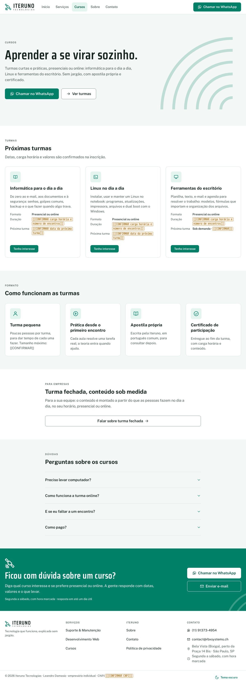
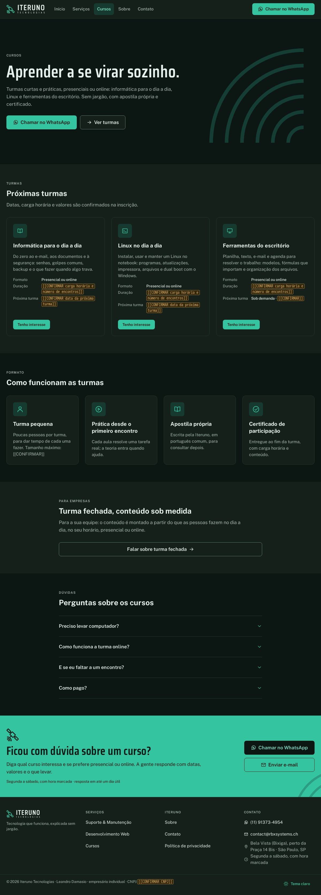
Linha do tempo (2021, fundação em São Paulo com o nome Informat; 2021 a 2025, a confirmar; 2026, retomada como Iteruno), os quatro princípios da marca (próxima, direta, competente, clara) e quem atende (nome a confirmar, grupo F). Fecha com a faixa "Vamos conversar?".
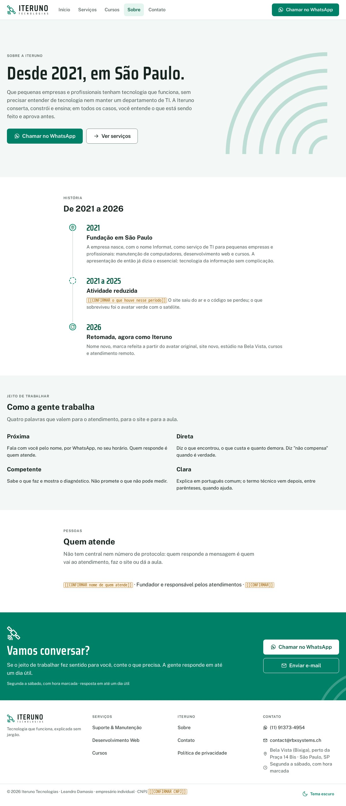
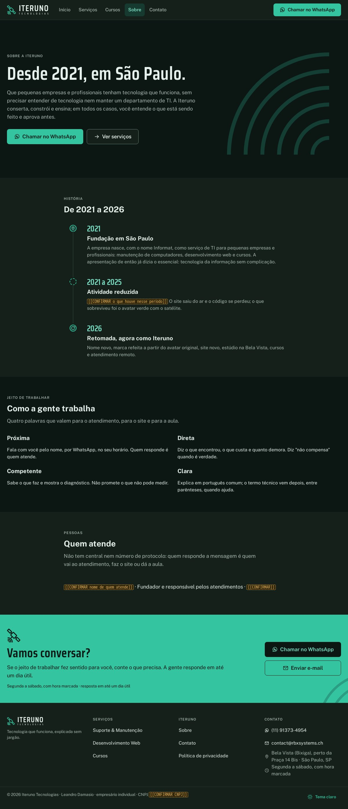
Formulário validado em português (resumo de erros com foco e mensagem em cada campo); envio pelo WhatsApp da RBX com a mensagem montada ou por e-mail com o mailto: preenchido, sem passar por servidor. A caixa da política avisa que a mensagem pode ser usada para melhorar o serviço e treinar a IA da Iteruno. Ao lado, os canais, o lugar e a área de busca e entrega; abaixo, as perguntas do atendimento e o aviso "Como funciona o atendimento".
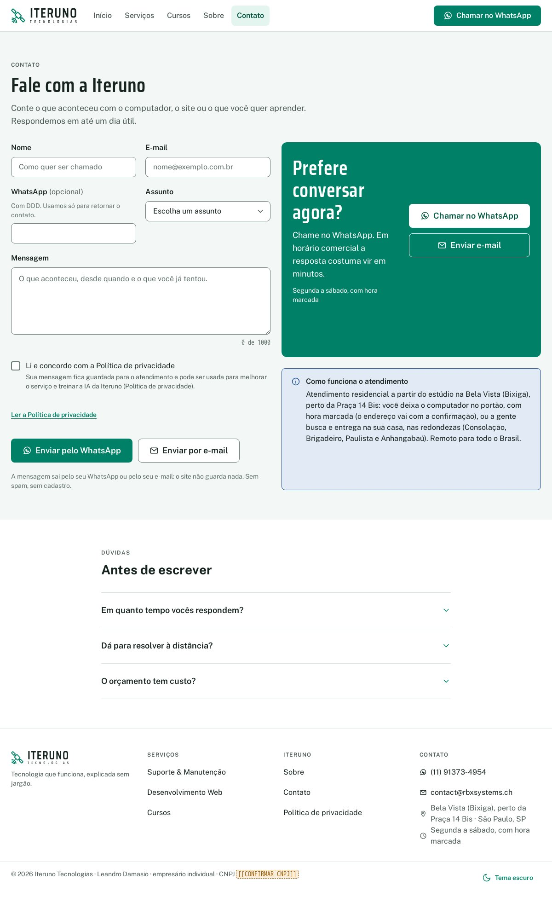
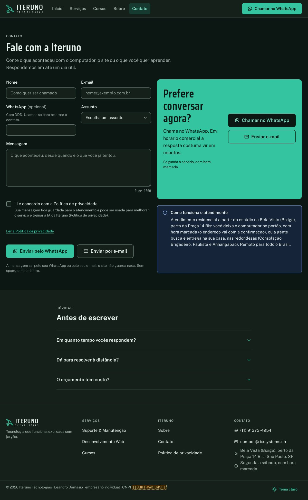
LGPD em português comum: o que o site recebe (formulário, log de acesso, preferência de tema, fontes do Google), para que serve, base legal, com quem é compartilhado (a RBX Systems, que opera a hospedagem e os canais), cookies (nenhum), prazos (log por 6 meses; mensagens sem prazo fixo, inclusive para treinar IA, com direito de exclusão), direitos e segurança. Controlador: Leandro Damasio, empresário individual, CNPJ a confirmar; encarregado ceo@rbxsystems.ch. Fora do menu; no rodapé e no formulário.
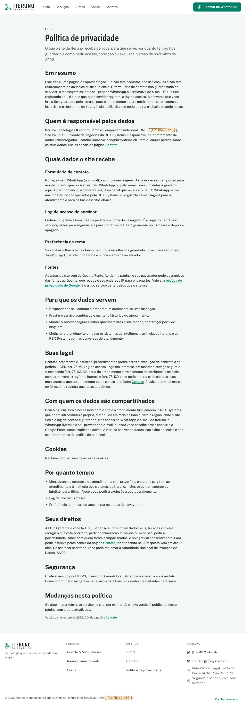
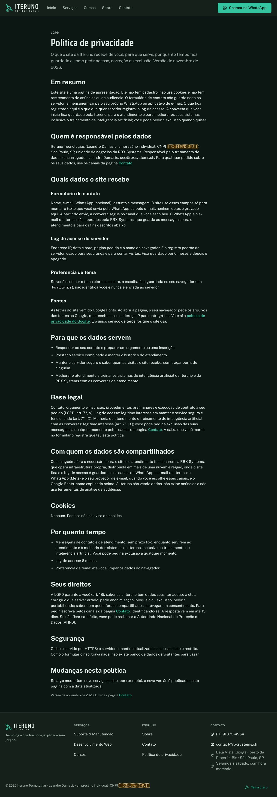
Servida com status 404 pelo Nginx da imagem para qualquer endereço que não existe; lista as páginas do site; fora dos buscadores (noindex).
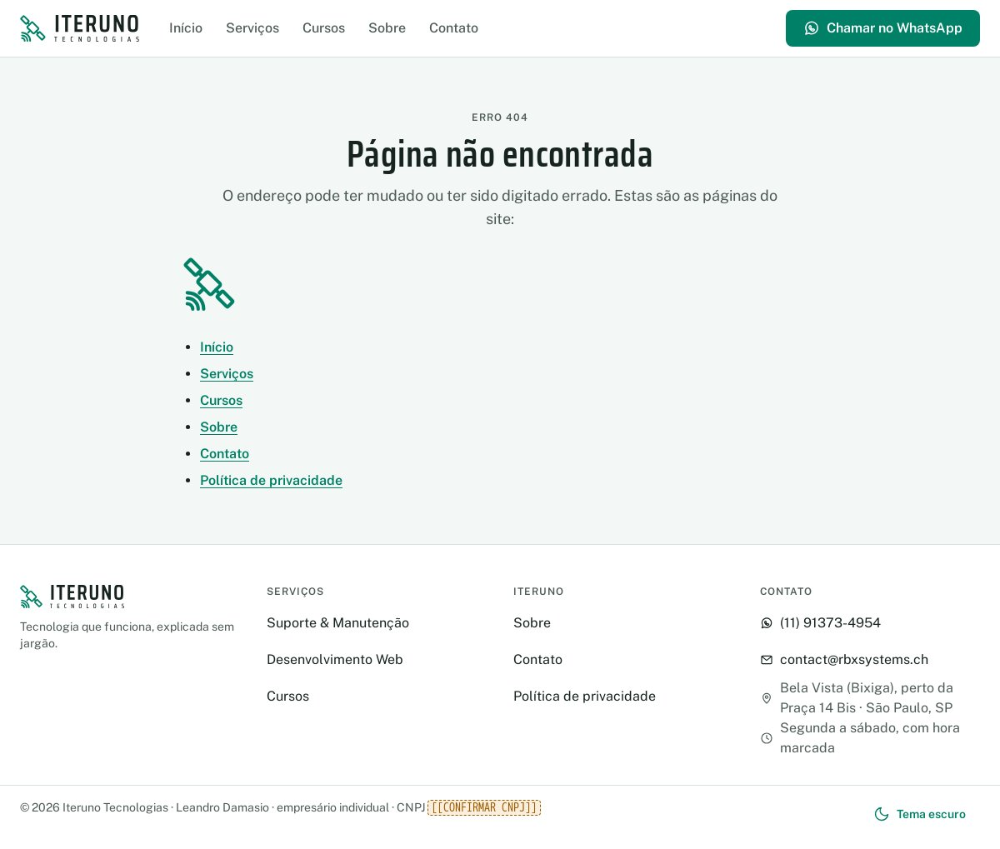
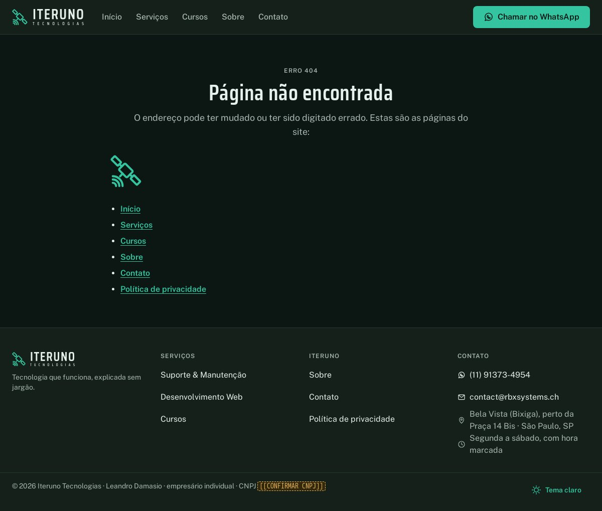
As sete páginas a 1200 e a 360 px: nenhuma rolagem lateral, fontes carregadas, nenhum erro de console além do 404 esperado na página de erro. Nenhuma classe inf- sobrou no HTML; "Informat" só aparece na linha do tempo e no alternateName.
Envio vazio: o resumo de erros recebe o foco e cada campo mostra a sua mensagem; telefone inválido é barrado; ?assunto=curso pré-seleciona o assunto. Preenchido: "Enviar pelo WhatsApp" abriu wa.me/5511913734954 com nome, assunto, e-mail, WhatsApp e mensagem, o botão de e-mail saiu com mailto:contact@rbxsystems.ch preenchido e o aviso de sucesso apareceu.
O botão "Tema escuro / Tema claro" do rodapé só aparece com JavaScript; alterna, guarda a escolha em localStorage e volta. Sem JavaScript o site segue o tema do sistema. As capturas escuras foram feitas com data-theme="escuro" fixo.
Menu de celular em <details>, com os cinco links e o botão de WhatsApp. /servicos/#suporte para 80 px abaixo do topo. 404 de verdade (status 404), /servicos → /servicos/ (301), www → sem www na configuração do Nginx. Instagram fora do rodapé até a conta nova existir.
Título e descrição por página, JSON-LD LocalBusiness com nome, nome anterior, telefone, e-mail e bairro, og.png (1200 × 630, gerada do logo novo), favicon, ícones e site.webmanifest. Canonical, Open Graph, sitemap.xml e robots.txt só apontam para um endereço absoluto quando o domínio for confirmado; até lá saem sem ele, de propósito.
A prova rodou na mesma imagem que vai para o cluster: Dockerfile → nginx-unprivileged na porta 8080, /healthz respondendo 200, try_files, 404, cache de um ano em /_app/immutable/ e de uma hora no resto, gzip, cabeçalhos de segurança.
Medido no build de 02/11 (revisão Iteruno). A meta das direções era cada página abaixo de 150 KB transferidos, com fontes.
| Página | HTML | HTML com gzip | JavaScript |
|---|---|---|---|
| Início | 56,9 KB | 11,8 KB | nenhum (só o script do tema, embutido) |
| Serviços | 52,0 KB | 11,6 KB | nenhum |
| Cursos | 43,2 KB | 7,9 KB | nenhum |
| Sobre | 35,5 KB | 7,3 KB | nenhum |
| Contato | 37,2 KB | 8,0 KB | 18 arquivos pré-carregados na abertura: 159,6 KB (65,4 KB com gzip), com cache de um ano |
| Política | 30,0 KB | 7,7 KB | nenhum |
| 404 | 25,6 KB | 5,8 KB | nenhum |
build/ inteira: 800 KB em disco. O logotipo vai embutido como SVG em cada página, com os caminhos arredondados a duas casas: a Início tinha chegado a 75 KB antes desse ajuste.Dockerfile na raiz do projeto: gera o site e o serve com nginx-unprivileged (porta 8080, /healthz, configuração em site/deploy/nginx.conf). O GitHub Actions (.github/workflows/build.yml) publica ghcr.io/rbxrobotica/iteruno-site:sha-… a cada envio e troca a tag no rbx-infra, do jeito dos outros produtos da RBX.
site/deploy/rbx-infra/ traz o que entra no rbx-infra por PR: namespace iteruno, Deployment com duas réplicas, Service, Ingress do Traefik com certificado do letsencrypt-prod e redirecionamento para https, e a entrada do app-of-apps do Argo CD. O domínio está como __DOMINIO__. O README.md de lá lista o que falta do lado do rbx-infra (destino do CI, segredo de pull pelo Ansible, DNS).
Domínio: iteruno.com (A3, confirmado em 02/11). Falta o repositório GitHub do site (A4). Pelas regras do rbx-infra, nenhum agente aplica, envia ou mescla sem a sua autorização para cada operação; tudo entra por PR. Nenhuma imagem foi enviada e nenhum manifesto foi aplicado.
Nenhum dado foi inventado: 27 marcadores [[CONFIRMAR …]] ficaram no conteúdo (eram 45; grep -rn CONFIRMAR site/src/ lista todos). A ficha completa, com o padrão de cada item em branco, está em ficha-de-dados.md, na raiz do projeto.
rbxrobotica/iteruno-site), para o CI publicar a imagem.contact@rbxsystems.ch?~/rbx/iteruno), 21 (formulário pelo rbx-comms), 22 (apagar os ativos antigos do artefato).Revisão Iteruno aprovada em 02/11/2026 (D-25). Domínio iteruno.com informado no mesmo dia (D-26); o repositório (A4) e a publicação seguem pelo Codex.